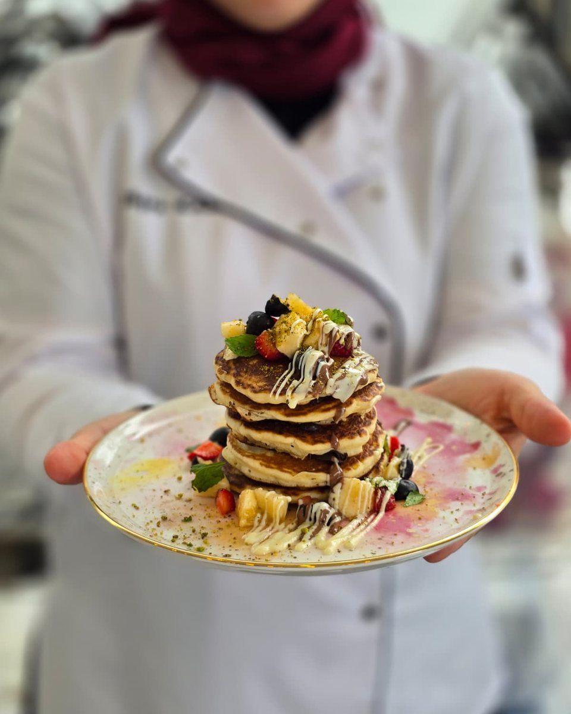

Benim tatlı hikâyem
“Bir pastanın ilk lokması gözle alınır. Biz o ilk bakışı unutulmaz kılmak için çalışıyoruz.”
Hikâyem, 2017 yılında ablamın baby shower partisi için butik pasta arayışımızla başladı. O gün gördüğüm pasta ve mekân beni öyle etkiledi ki, “Ben de bu işi yapmak istiyorum” dedim.
2023 yılında hayalimin peşinden giderek pastacılık eğitimlerine başladım ve sertifikalarımı tamamladım. Bugün, o gün içimde doğan hayali sevgiyle gerçeğe dönüştürüyorum.
— Büşra Karaköz